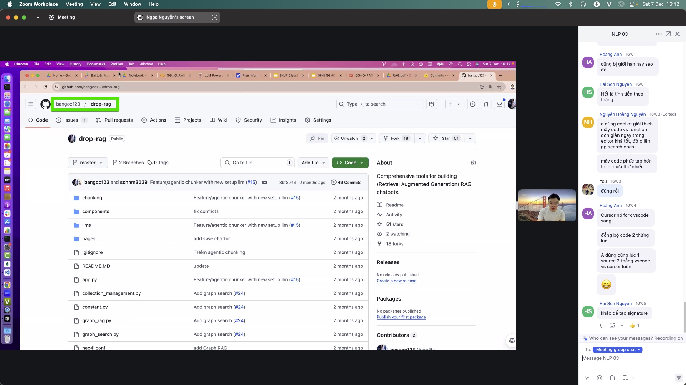
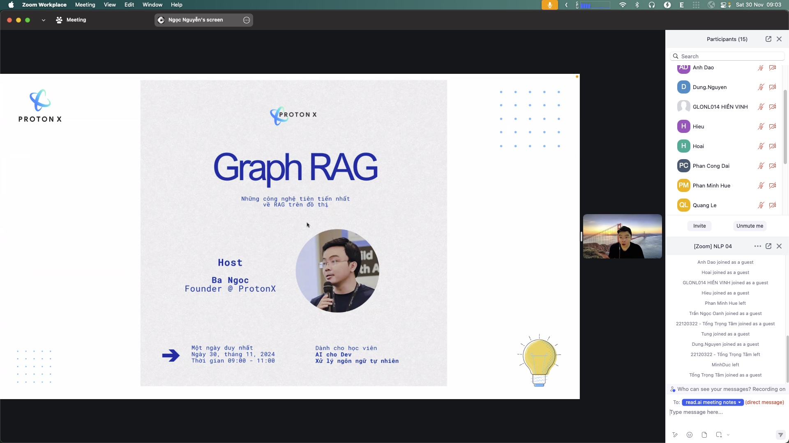
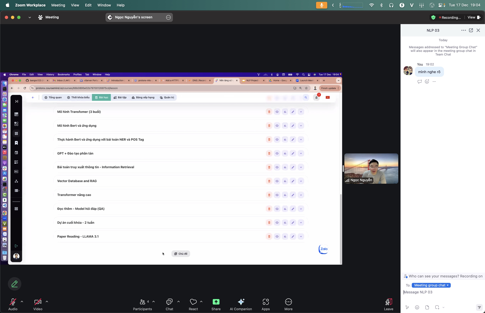

RAG
Retrieve relevant documents first, then let the model compose a grounded answer with citations.
RAG — Retrieval-Augmented Generation
Instead of forcing the model to answer from memory alone, first look up relevant documents, then let the model compose an answer grounded in them. Like checking a book before you speak.
Why it matters
Language models know a lot but often hallucinate on unfamiliar facts and cannot read your private documents. RAG fixes both: anchor answers in a real corpus (company docs, videos, repos…) with citations. Answers become more accurate, more current, and verifiable — without retraining the model.
Key ideas
- Two phases:
- Retrieve: embed the question (embedding.md), search the vector DB for the top-k chunks closest in meaning.
- Generate: insert those chunks into the prompt as context; the model composes the answer from them.
- Chunk + vector DB: split documents into segments, embed each segment; a DB (FAISS, Chroma, pgvector…) finds nearest segments fast, optionally filtered by metadata.
- Unlike pure chat: pure chat relies on model memory; RAG is always anchored to your corpus — it can answer about documents the model never saw.
- Quality depends on retrieval: wrong chunks → wrong answers no matter how good the model is. Good chunking and embeddings are critical.
- Advanced variants: Graph RAG links entities in a graph for multi-hop questions; reranking and hybrid search (keyword + vector) boost accuracy.
Illustrations




Pipeline
question → embed → top-k from vector DB → (chunks + question) → LLM → answer + citations
RAG stands on embedding.md; the lab's Personal Knowledge-base follows this direction (personal-knowledge-base.md).
Slides & demo
| Link | |
|---|---|
| Slides | slides/rag |
| Working app | demos/rag/app |
References
- Lewis et al. 2020 — Retrieval-Augmented Generation
- Microsoft GraphRAG
Related
- vector-database.md, semantic-search.md — infrastructure and retrieval for RAG
- embedding.md, personal-knowledge-base.md